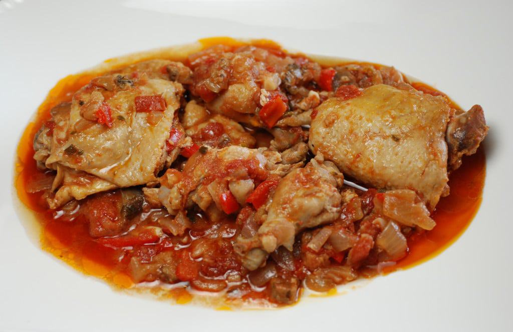

Kedjenou

Description
The kedjenou is an Ivorian recipe, traditionally prepared in a canary
(earthenware container) and cooked over a wood fire. This chicken kedjenou
is less traditional but just as delicious!
Ingredients
- 1 clove of garlic
- 1 large onion
- 3 large tomatoes
- 1 large eggplant
- 1 free-range chicken cut into pieces
- 2 sprigs of thyme
- 3 to 4 bay leaves
- 1 tsp. grated ginger
- 1 tsp. chili pepper (Cayenne or Espelette)
- fine salt and ground black pepper
Steps
-
Wash, peel and cut the eggplant into pieces. Wash and dice the tomato.
Peel and slice the onion. Peel and finely chop the garlic clove.
-
Place the chicken pieces in a pressure cooker, add the eggplant pieces,
diced tomatoes, onion rings and chopped garlic. Season with salt and
pepper and season to taste.
-
Add the thyme sprigs, bay leaves and grated ginger. Mix well (without
adding water) and close the pressure cooker.
-
Allow to heat over low heat. The pressure will be felt after about 15
minutes.
-
Without opening the pressure cooker, it is now time to "kedjenou"
(literally "stir in"): stir every 5 minutes for 15 minutes, swirling the
contents of the cooker for 5 to 10 seconds.
-
At the end of the cooking time, serve your kedjenou chicken hot,
accompanied by attiéké (a kind of Ivorian couscous made from cassava),
white rice or boiled yams.